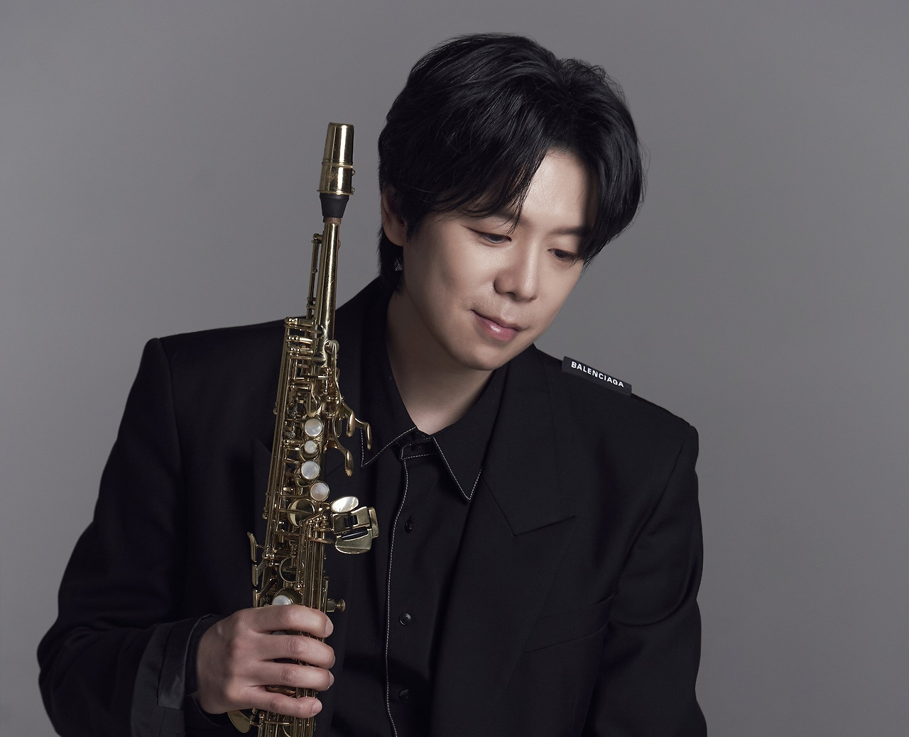
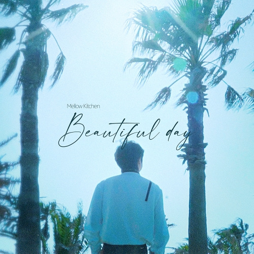

안녕하세요 라보엠입니다.
월간 윤종신 2022년 6월호 민서 - 그댄 달라요를 다시 듣다가 처음 들었을 때는 민서님의 목소리에만 집중해서 잘 몰랐던 예쁜 색소폰 선율이 포착되었습니다. 월간 윤종신에서는 Credits 정보를 친절하게 적어주시니 살펴보았습니다.
[Credits]
Lyrics by 윤종신 Composed by 윤종신, 이근호 Arranged by 송성경 Guitars 방인재 Bass 최인성 Drums 송성경 Keyboards 송성경 Saxophone Mellow Kitchen Background Vocals 하림 Recorded 김일호, 김지현(@STUDIO89) Mixed by 김일호(@STUDIO89 / Assist. 서유덕) Mastered by 권남우(@821 Sound)
출처 - 월간 윤종신 6월호 그댄 달라요
https://www.youtube.com/watch?v=6RhsEhquM3Y

음악 스타일
멜로우키친의 음악은 부드럽고 그윽한 감성을 특징으로 합니다. 그의 예명인 멜로우키친은 본명의 이니셜 M.K.에서 착안한 것으로, 부드럽고 그윽한 음악을 만들어 들려주겠다는 의미를 담고 있습니다. 그의 음악적 스타일은 영국 브릿팝의 특징을 살린 사운드로 표현됩니다.
음악 활동
멜로우키친은 2009년 스윙브로스라는 팀에서 Jade라는 예명으로 데뷔했습니다. 2017년에는 첫 솔로 미니앨범을 발매하며 본격적인 솔로 활동을 시작했습니다. 이후 다양한 싱글과 앨범을 발매하며 꾸준히 활동해오고 있습니다.
주요 작품:
- "그렇게 끝났다 (Feat. 숙희)" (2018)
- "멀어질까봐 (feat. 박지용 of 허니지)" (2018)
- "IF" (2019)
- "Way Back Home" (2020)
협업 및 인정
멜로우키친은 다양한 아티스트들과의 협업을 통해 음악적 스펙트럼을 넓혀왔습니다. 브라운 아이드 소울의 "Right", 박재정의 "사랑, 그게 될 거라고 생각했어" 등의 곡에 참여했습니다. 또한 2019년 JTBC 슈퍼밴드에 출연하여 실력을 인정받았으며, 최근에는 축구선수 손흥민을 위한 헌정곡 'Sonny'를 작곡하여 주목받았습니다.
현재 멜로우키친은 툴뮤직 소속 아티스트로 활동하며, 색소포니스트이자 작곡가로서의 역량을 꾸준히 발휘하고 있습니다. 그의 음악은 감성적이면서도 기술적인 면에서 뛰어나, 한국 음악계에서 독특한 위치를 차지하고 있습니다.
유튜브에서 찾아보니 Way back home (Original by SHAUN) 을 잠수교에서 흑백으로 원테이크로 찍으셨네요. 원곡의 느낌과는 많이 다릅니다. 자신만의 스타일로 멋지게 커버하셨네요.
놀면 뭐하니 MSG워너비 정상동기 - 나를 아는 사람에서도 그 색소폰 연주자이셨네요 ^^ 나얼님과의 곡도 있어서 그 인연으로 이 곡에서 같이 하신것 같습니다. 뭐랄까 6,70년대 색소폰의 느낌이 너무나 매력적입니다.
개인적으로는 2021년에 발매된 앨범 [Beautiful Day] 첫번째곡 If 가 가장 좋습니다. 뮤비가 없어서 타이틀곡 Beautiful Day 를 링크합니다.
요즘은 이런 아날로그 연주자 분들을 보기가 너무 힘든데, 보석같은 연주자님을 알게 되어 너무 행복합니다. 방송에도 많이 출연하시고 놀면 뭐하니 같은 메인 예능에도 세션으로 참여하셨는데 유튜브 등에서 좀더 흥하셨으면 좋겠습니다.
